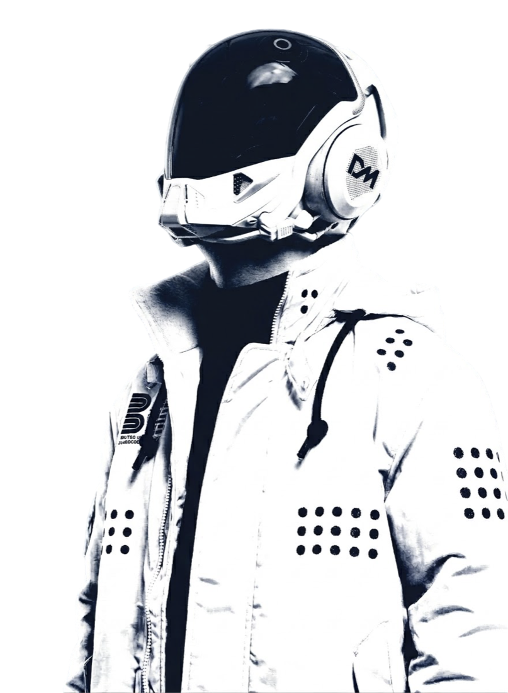

David Muñoz — Brand & digital systems — ©2026
Art director
Toronto, ON
12 case files
Brand systems, UX/UI and editorial design.
14+ years in practice // Est. 2012
Selected case files
Brand architecture, editorial systems and digital interfaces, built with Swiss typographic precision. Open a file for the full breakdown.
Loading case files…
Experience and capabilities
14
Years in practice 経験
I blend creativity with strategy to turn concepts into compelling visual communication — cohesive assets across print, advertising, digital and social, built around purposeful brand stories.